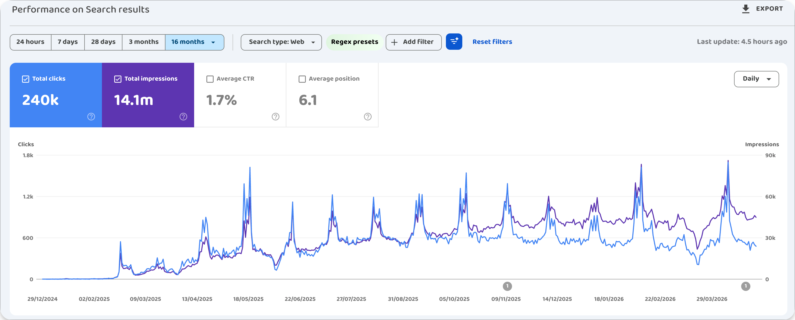
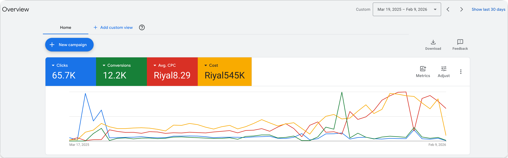

دراسة حالة من براندولوجي. كيف رفعنا إيرادات مبادر للرعاية المنزلية من 72 ألف ريال شهرياً إلى 750 ألف ريال في شهر واحد، كيف بنينا محرّكات النمو وبنيته التحتية، وكيف يستفيد من هذه التجربة كل صاحب عمل يسعى للتوسّع.
في أغسطس 2024، قبل توقيع أي عقد، أجرت براندولوجي تدقيقاً شاملاً للحالة الرقمية لمبادر. ونبّأتنا النتائج بحجم العمل والتأسيس المطلوبَين.
على مستوى الموقع: 87.5٪ من الصفحات تفتقد العناوين الأساسية التي يبحث عنها جوجل. الصفحة الرئيسية تحوي صورة واحدة غير مضغوطة بحجم 33 ميجابايت. لا توجد بيانات منظمة (Schema)، ولا روابط canonical، ولا رؤوس أمان. الموقع لا يستطيع الظهور في جوجل لأي بحث ذي قيمة.
على مستوى الإعلانات: مبادر كانت تشتري إعلانات على Google Ads وتصرف عليها مبالغ حقيقية. لكن الصفحة التي يهبط عليها الزائر بعد الإعلان لم تكن تخدم الإعلان. لا زر حجز واضح في أعلى الصفحة. لا شهادات ولا تقييمات ولا أي شيء يبني الثقة. ولا سبب مكتوب يدفع عائلة سعودية للحجز هنا تحديداً. الموقع البطيء كان يفقد الزوار القلائل الذين أوصلتهم الإعلانات. تتبّع التحويلات كان معطّلاً. لم يكن أحد يعرف أي حملة جلبت أي عميل، ولا أي عميل تحوّل إلى حجز، ولا كم كان عائد كل حملة فعلياً. كانوا يصرفون بدون قياس. عائد الإنفاق الإعلاني (ROAS) كان ضعيفاً، ولا توجد طريقة لإثباته ولا لتحسينه.
على المستوى التشغيلي: تطبيق الجوال له 10 تنزيلات. صفحة فيسبوك بـ 362 متابعاً. لا تسويق بالبريد، لا نظام إحالات، لا أتمتة، لا CRM. ولا طريقة لفريق المبيعات لمعرفة من أي قناة جاءت كل مكالمة.
خلاصة التدقيق كانت في جملة واحدة: الموقع لا يستطيع الظهور بوضعه الحالي. الإعلانات لا يمكن تحسينها بدون قياس. والبنية التسويقية ليست موجودة أصلاً. التوصية: إعادة بناء من الصفر.
أغلب الوكالات تبدأ بأكثر شيء يلفت النظر: شعار جديد، حملة إعلانية جديدة، باقة منشورات سوشيال. نحن بدأنا بأهدأ شيء. ضبطنا وسائل التتبع وقياس الأداء من الصفر على أسس صحيحة دقيقة، عبر Google Tag Manager وGoogle Analytics 4، وعرّفنا كل تحويل بهدف يمكن قياسه، ووصّلنا كل نموذج تواصل مباشرة إلى جوّالات فريق المبيعات في نفس اللحظة. لا شيء من هذا مبهر. لكنه السبب في أن كل رقم في هذه الدراسة قابل للإثبات.
ثم أعدنا بناء الموقع. ووردبريس على استضافة قياسية (المنصة ليست العائق. الانضباط هو العائق). بيانات منظمة (Schema) في كل صفحة حتى يفهم جوجل الموقع كما يجب.
ثم المحتوى. مقالات طبية متعمّقة شهرياً، كل شهر، لمدة 11 شهراً. ليست محتوى تسويقياً سطحياً, مقالات طبية حقيقية عن الحجامة، عرق النسا، رعاية مرضى الزهايمر، الدعم بعد العلاج الكيماوي. النوع الذي تبحث عنه عائلة سعودية الساعة 2 صباحاً عندما تقلق على والدها أو والدتها.
وعندها فقط، انطلقت الإعلانات المدفوعة. 20,000 ريال شهرياً على Google Ads. نعدّلها كل يوم. نراقبها بالساعة.
أوّل عشرة أسابيع، منحنى البحث العضوي لم يتحرّك. الإعلانات المدفوعة كانت تجلب إيرادات من أوّل يوم، لكن قناة الزوار المجانية من جوجل تأخذ وقتاً أطول حتى تثمر. هذا تحديداً ما تخفيه أغلب الوكالات حين تبيعك خدمات الـ SEO.
في أواخر فبراير 2025، بعد عشرة أسابيع من النشر الأسبوعي، تحرّك المنحنى لأول مرة. عدد الزوار اليومي من بحث جوجل تجاوز 100. وفي مارس، صعد ترتيب مبادر من الصفحة الثالثة إلى أعلى الصفحة الأولى. ومن ذلك الشهر، صار الزوار المجانيون يتراكمون شهراً بعد شهر.
كل مقال جديد فتح باباً إضافياً تصل منه عائلة سعودية إلى مبادر. والمقالات الأقدم استمرّت في الصعود كلما زادت ثقة جوجل في الموقع. بحلول أكتوبر 2025، صار مبادر يستقبل 22,000 زائر مجاني من جوجل شهرياً (1,000 يومياً)، يبحثون عن الحجامة، وعرق النسا، ورعاية مرضى الزهايمر، والدعم بعد العلاج الكيماوي. هذا النوع من الزوار لا يُشترى: يصل العميل وهو يبحث بنفسه ويثق بمن يجده، لا لأن إعلاناً قاطعه وهو يتصفّح.
"النقرات تُشترى. الثقة لا تُشترى. بحث جوجل هو القناة الوحيدة التي يصل فيها العميل وهو يثق بك مسبقاً."
هذه ليست قفزة مفاجئة أو عشوائية، بل هي نتيجة مقالات جديدة كل أسبوع، لمدة 11 شهراً بنينا كل مقال منها على أسس دقيقة من فهم بنية كلمات البحث في جوجل وما يقوم به المنافسون والمتصدرون لنتغلب عليهم. المكتبة تراكمت. كل مقال جديد يصعد تدريجياً مع مرور الوقت. والمكتبة كلها ترتفع مع ارتفاع ثقة جوجل في موقع مبادر.

ROAS يعني عائد الإنفاق الإعلاني: كم ريالاً تعيده الحملة مقابل كل 1 ريال تصرفه. وهو الرقم الوحيد الذي يجب أن يطلبه صاحب العمل عند تقييم أي حملة إعلانية. بعد ضبط التتبع وقياس الأداء على أسس صحيحة، صار لكل حملة من حملات مبادر ROAS قابل للقياس لأول مرة.
المرحلة الأولى (أبريل 2025). صرفت مبادر 31,991 ريال على Google Ads ذلك الشهر، وحقّقت 369,000 ريال مبيعات من تلك الحملات. ROAS: 11.5× (كل 1 ريال صُرف أعاد 11.5 ريال إيرادات). تسعون تحويلاً. خمسمائة عميل محتمل مؤهّل (MQL). النموذج اشتغل. السؤال التالي كان: إلى أي حدّ يستطيع التوسّع؟
بحلول منتصف 2025، كانت لدى مبادر ثلاث محاور تشتغل في وقت واحد: موقع يجده جوجل، مكتبة محتوى تجلب الزوار مجاناً، ونظام قياس يثبت رحلة كل عميل من النقرة الأولى حتى الحجز. البيانات كانت واضحة. المحرّك يستطيع حمل ضغط أكبر.
المرحلة الثانية (يوليو ← نوفمبر 2025). رفعنا الصرف على Google Ads إلى 50,000 ريال شهرياً. استقرّت الإيرادات الشهرية عند 500,000 ريال، أي 7 أضعاف ما كانت تحقّقه مبادر قبل العمل معنا (72 ألف ريال). ROAS: 10× ثبتَ على هذا الرقم خمسة أشهر متتالية. كفاءة أقل من المرحلة الأولى، لكن الإيرادات الإجمالية أعلى بكثير.
المرحلة الثالثة، الذروة (ديسمبر 2025). دفعنا الصرف إلى 96,000 ريال شهرياً. قفزت الإيرادات إلى 750,000 ريال في ذلك الشهر، أعلى شهر سجّلته مبادر على الإطلاق، و10 أضعاف ما كانت عليه قبل البداية. ROAS: 7.8× (كل ريال يُصرف يرجع 7.8 ريال). كفاءة أقل من المرحلة الثانية بقرار واضح منّا، مقابل أعلى إيرادات شهرية وصلت إليها مبادر منذ تأسيسها.
للسياق: أي حملة Google Ads تحافظ على ROAS فوق 4× تعتبر حملة قوية. الوصول إلى 10× خمسة أشهر متتالية شيء استثنائي. الـ 11.5× في شهر واحد دليل قاطع على أن النموذج صحيح، لا مجرد ضربة حظ. والـ 7.8× مع صرف يلامس 100 ألف ريال شهرياً وعائد 750 ألف ريال، هو الرقم الذي ينقل الشركة إلى مستوى آخر كلياً.

1. الحساب لا يعمل إلا إذا سبقه القياس. كل رقم قابل للإثبات في هذه الدراسة موجود لأننا ضبطنا وسائل التتبع وقياس الأداء من الصفر على أسس صحيحة دقيقة، قبل أن نصرف ريالاً واحداً. إذا أرادت وكالتك أن تبدأ بإطلاق الإعلانات «حتى نرى ما يحدث»، فاسألها كيف ستقيس ما حدث.
2. المحتوى يتراكم. لا توجد طرق مختصرة. مكتبة محتوى مبادر استغرقت 11 شهراً من النشر الأسبوعي حتى صارت محرّكاً يجلب 22,000 زائر مجاني من جوجل شهرياً (1,000 يومياً). أي شخص يَعِدك بهذا في 30 يوماً يبيعك شيئاً آخر.
3. جهّز فريق المبيعات للحجم الذي ستولّده. المحرّك التسويقي المُحكم يولّد عملاء محتملين أسرع من قدرة فريق المبيعات على إغلاقهم. ابنِ الفريق بالتوازي مع المحرّك. النتائج تتضاعف فعلياً حين ينمو الاثنان معاً.
حاشية. ذروة ديسمبر 2025 المذكورة أعلاه جاءت بعد رفع الصرف إلى 96,000 ريال شهرياً. خلال أسبوعين من الرفع، تضاعف عدد العملاء المحتملين، ووصلت الإيرادات إلى 750,000 ريال في الشهر. المحرّك التسويقي لا يزال يملك طاقة أكبر من ذلك، في انتظار أن يلحق به فريق المبيعات. النمو بأكثر من 10 أضعاف في الإيرادات، والـ 11.5× في عائد المرحلة الأولى، هي النتائج الموثّقة لهذا العمل.